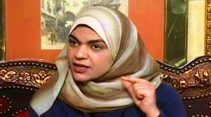

پذيرش > سایت نوشته ها > بهار جنبش زنان در کشورهای عربی


 بهار جنبش زنان در کشورهای عربی بهار جنبش زنان در کشورهای عربی
17 تیر 1391 - سحر خمیس/ برگردان: بنفشه رنجی - نسخه قابل چاپ
سحر خمیس، استاد دانشگاه مریلند ایالت متحده آمریکا و کارشناس مسائل رسانه در منطقه خاورمیانه و عرب است.
او همچنین شمار زیادی مقاله و کتاب در زمینه زنان، خاورمیانه و رسانه در کارنامه خود دارد. علاوه بر اینها، او جوایز علمی و حرفهای بسیاری را از آن خود کرده است. سحر خمیس در مقاله زیر به نقش زنان در قیامهای مردمی در کشورهای عربی و همچنین آینده جنبش فمینیسم عربی و زنان عرب میپردازد.
او به دو اردوگاه متفاوت در میان فعالان زن اشاره میکند: اردوگاه اول، شامل نسل جوانتری از فعالان هستند که حقوق زنان را بخشی از مسئله بزرگ حقوق بشر میدانند و گروه دوم، فعالان قدیمیتر هستند که معتقدند اگر به مسائل زنان به طور مجزا پرداخته نشود، دستاوردهایی که تا به حال در این زمینه حاصل شده از دست خواهد رفت.
نویسنده خود موضعی میان این دو موضع دارد و معتقد است حضور و مبارزه زنان در فضای مجازی و دنیای واقعی، صرف نظر از واکنشهای جوامع یادشده به چند و چون مبارزه، گامی رو به جلو برای جنبش فمینیسم عربی است. مقاله او را میخوانیم:
سحر خمیس - بسیاری از منتقدان سیاسی، انتخاب توکل کرمان برای نوبل صلح ۲۰۱۱ را علامت مثبتی هم برای بهار عربی و هم برای نقش ویژهای میدانند که زنان در آن ایفا کردند.
توکل کرمان، شناخته شده به عنوان مادر انقلاب در یمن، سمبلی بوده است برای هزاران زن که در کشورهای عربی به خیابانها هجوم آوردند، زندگی خود را به خطر انداختند و خود را در معرض آسیب قرار دادند تا شان، آزادی و دموکراسی طلب کنند. ناظران این موج وسیع انقلاب سیاسی نمیتوانند کمکی به این امر کنند، اما شاهد نقش آشکار و قابل توجهی هستند که زنان در آن بازی میکنند؛ از پیر و جوان تا مسلمان و مسیحی، محافظهکار مذهبی و لیبرال، با حجاب و بیحجاب و ثروتمند و فقیر. این طیف از زنان نشانگر زمان جدیدی برای اتحاد و همبستگی، پیوستگی، تساویطلبی و پایههای جنبشی هستند که برای پشتیبانی آن بیرون آمدند.
با این وجود، این زمان طلایی برای اتحاد در مبارزه که منجر به تغییر سیاسی واقعی در برخی کشورهای عربی نظیر تونس، مصر و لیبی و تغییری که اکنون در حال انجام شدن در دیگر کشورها نظیر سوریه، یمن و بحرین است، توسط کسانی دنبال شده است که در مورد اقدامات آینده، سمت و سوی تغییر سیاسی و اصلاح دموکراتیک اختلاف دارند. مسئله حقوق و نقشی که زنان میتوانند در بازسازی کشورشان و شکلدهی آیندهشان ایفا کنند کلیدی برای قسمتی از این بحث است. اختلافهای زیادی در کشورهایی مانند مصر بر سر معانی بالقوهای وجود دارد که بهار عربی برای آینده جنبشهای فمینیستی عربی و دستاوردهای مورد انتظار برای زنان عرب در سطح کلان خواهد داشت.
فعالان پیر و جوان حوزه مسائل زنان
در یک سو افراد خوشبینی وجود دارند که بر جهش زنان عرب و عزم آنها برای تغییر حساب میکنند و آنها را بهترین محافظ برای هر نوع واکنش شدید علیه حقوق زنان در نظر میگیرند. این اردوگاه به طور کل از فعالان جوان حوزه مسائل زنان، کسانی که حقوق زنان را به عنوان یک جزء از مسئله بزرگتری به نام حقوق بشر میدانند، تشکیل شده است.

"تسلیمی برای درخواست آزادی، دموکراسی و حقوق بشر در جهان عرب وجود ندارد و همچنین زمانی که نوبت به درخواست برای حقوق زنان، نمایندگی سیاسی و مشارکت برابر در تمام امور زندگی میشود، تسلیمی در کار نیست." این از سخنان نواره نجم، فعال سیاسی مشهور مصری و وبلاگنویسی بود که نقشی برجسته در فضای مجازی و واقعی در انقلاب مصر ایفا کرد. نواره نجم اضافه میکند: "با این وجود، حقوق زنان باید در قالب بزرگتر حقوق بشر چهارچوبسازی شود. به تعبیر دیگر، زنان عرب تنها زمانی از حق کامل خود به عنوان شهروند بهره میبرند که همه شهروندان صرف نظر از جنسیت حقوقشان تضمین شده باشد."
دیگر فعال سیاسی جوان مصری، دالیا زیاده، کسی که علاقه خود را به کسب مقام ریاست جمهوری آینده مصر اعلام کرده است – البته زمانی که چهل ساله شود؛ یعنی به سن قانونی برای کسب این مقام برسد- با این عقیده موافق است. این زنان جوان، زنده بودن نسل جدیدی از فعالان زن را بازتاب میدهند؛ کسانی که محدودیتی برای دستاوردهای زنان در جهان عربی نمیبینند که به سرعت در حال تغییر است.
در سوی دیگر، کسانی وجود دارند که کمتر خوشبین هستند. این اردوگاه به طور کل از نسل قدیمیتر تشکیل شده است و کسانی را شامل میشود که ترجیح میدهند حقوق زنان را خارج و به عنوان مسئلهای جدا در نظر گیرند که باید برجسته شود و برای آن جدا از درخواست برای اصلاح سیاسی و دموکراسیسازی در منطقه مبارزه شود.
زنان و بازگشت به عرصه خصوصی و خانگی
زمانی که فمینیست مشهور، نوال السعداوی برای تلاش برای برانگیختن آگاهی نسبت به ضرورت وجود یک مبارزه موازی برای حقوق زنان در مصر به میدان تحریر رفت، حرکت او توسط بسیاری از مردم حاضر در میدان که این مسئله را بی مورد و یا نا به هنگام میدانستند مورد استقبال قرار نگرفت.
یکی از زنانی که این موضعگیری را نمایندگی میکند، سمیه صادق، روزنامهنگار مجله رز الیوسف است. او به اتفاقهایی مانند راهپیمایی ناموفق روز جهانی زن در میدان تحریر در مارس ۲۰۱۱ اشاره میکند: "این راهپیمایی که قرار بود میلیونها زن را برای گردهمایی برای حقوق زنان جذب کند، تنها توانست پانصد زن را در میدان جمع کند. بسیاری از مردان بر آنها فریاد زدند و به آنها گفتند: به آشپزخانه بازگردید."
او همچنین به تعداد زنانی که خود را برای آخرین انتخابات پارلمانی حکومت مبارک نامزد کردند اشاره و اضافه میکند: "این نشانهای دلگرمکننده نیست. ما احتیاج داریم زنان پویای بیشتری را برای انتخابات و نامزد شدن برای تغییرات سیاسی در مصر ببینیم و نه تعداد کمتری." زنانی که این موضع را تایید میکنند به طور کل برای پیشرفت زنان و دستاوردهای آنان بعد از موفقیت یک انقلاب و یا گذار به یک دوره سیاسی جدید میترسند و نگران هستند که که موجودیت زنان از عرصه عمومی، مشارکت سیاسی و امکان دیده شدن در جامعه کنار گذاشته شود و زنان مجبور شوند به عرصه خصوصی و خانگی بازگردند.
زمانی که نوبت به پیش بینی آینده محتمل جنبشهای فمینیستی در این بخش از جهان میشود معقول خواهد بود که با احتیاط، حدی میانی از خوشبینی اتخاذ شود که تصویر کلی با تمام چالشهای سیاسی، اقتصادی و اجتماعی و ابهامهای آن علاوه بر پیشرفتها و پیروزیهای بیسابقه در حمایت از حقوق بشر و آزادی سیاسی در این منطقه به سرعت در حال تغییر در نظر گیرد.
شمار زیادی از زیادی از زنان در بسیاری از جوامع محافظهکار عرب مانند یمن و به مقدار کمتری بحرین برای ماههای متوالی در موقعیتهای تهدیدآمیز و خطرناک گرد هم آمدند و این دورهای جدید در تاریخ فمینیسم در این منطقه را نشان میدهد. این به این معنا نیست که اگر قیامهای مشهور در این کشورها پیروز شوند به طور خودکار آنها به تبعیضها، نابرابریها و ناعدالتیها نسبت به زنان پایان میدهند. بلکه، این به این معناست که زنان عرب امروزه بیشتر خواهان مبارزه آشکارا و شجاعانه برای حقوقشان هستند و بیشتر قادرند از خودشان در مقابل اقدامات منفی دفاع کنند.
فعالیتهای سیاسی زنان عرب در اینترنت و جهان واقعی در طول ماههای اخیر فصل جدیدی از تاریخ فمینیسم عربی را رقم زده است. هنگامی که هیچ بازگشت به عقبی در تاریخ سیاسی این ناحیه نباشد، میتوان پیشبینی کرد که هیچ بازگشت به عقبی هم برای فمینیستهای عرب وجود ندارد. آنها راه را به سوی آزادی شناختهاند و مصمم هستند تا در آن قدم بگذارند. لازم است گفته شود که بهار فمینیستهای عرب هنوز در جریان است.
رادیو زمانه
ارسال به
بالاترین
،
توییتر
،
فریندفید
،
فیسبوک
در همين بخش :
 یک خبر تلخ؟ یک قانونشکنی؟ یک تصمیم بخشنامهای جدید؟ یک خبر تلخ؟ یک قانونشکنی؟ یک تصمیم بخشنامهای جدید؟
چرا بایست به سکسوالیته پرداخت؟ / نفیسه آزاد
آزارجنسی خانگی؛ «قربانی» نه، «نجات یافته»
زنان، بزرگترین بازندگان بهار عرب
سانسور از دیدگاه جنسیتی/الهه امانی
ديگر بخش ها :
طرح یک میلیون امضا
|
مقالات
|
سایت نوشته ها
|
اخبار
|
گزارش كمپين
|
گفت و گو
|
علیه سکوت
|
كوچه به كوچه
|
نامه های شما
|
گزارش ویژه
|
گفتگو با اعضا
|
ویژه سالگرد کمپین
|
تصویر برابری
|
دل آرام علی
|
تریبون
|
مقالات
|
تاریخ شفاهی
|
خارج از چارچوب
|
کتابخانه
|
درباره کمپین
|
کمپین در شهرها
|
کمپین در بند
|
صدای تغییر
|
ویژه 22 خرداد
|
لایحه حمایت از خانواده
|
گالری
|
عشا مومنی
|
امیر یعقوبعلی
|
خدیجه مقدم
|
راحله عسگری زاده و نسیم خسروی
|
پروین اردلان،جلوه جواهری، مریم حسین خواه، ناهید کشاورز
|
زینب پیغمبرزاده
|
سعیده امین، سارا ایمانیان، محبوبه حسین زاده، ناهید کشاورز و همایون نامی
|
احترام شادفر
|
نسیم سرابندی زاده،فاطمه دهدشتی
|
وبلاگ مهمان
|
پرونده خرم آباد
|
دستگیری ها
|
مریم مالک
|
پرستو اللهیاری
|
مهرنوش اعتمادی
|
سمیه رشیدی
|
Other Languages
|
همراهان
|
«فراخوان کمپین ده روز با بهاره هدایت»
| English
|